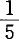
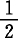
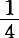
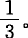
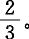
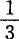
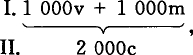

2.固定资本的实物补偿
上面考察的假设否定以后，就只剩下这样的可能性：除了用货币补偿损耗部分以外，还用实物补偿寿命全部完结的固定资本。
我们在前面已经假定：
（a）第Ⅰ部类用来支付工资的1000镑，被工人花费在同等价值额的Ⅱc上，即用来购买消费资料。
至于在这里1000镑是第Ⅰ部类以货币形式预付的，这只是说明有这个事实。有关的资本主义生产者必须用货币支付工资；然后这些货币被工人花费在生活资料上，而对生活资料的卖者来说，当他们的不变资本由商品资本转化为生产资本时，这些货币又当作流通手段来使用。当然，这些货币可以经过许多渠道（小商人、房主、收税人以及工人本身所需要的医生等等非生产劳动者），因此只有一部分直接从第Ⅰ部类的工人手中流到第Ⅱ部类的资本家阶级手中。这种流动可能或多或少发生停滞，所以资本家方面必须有新的货币准备。在研究基本形式时，这一切将不予考察。
（b）前面假定，在一个场合第Ⅰ部类还预付400镑货币，向第Ⅱ部类购买物品，这些货币流回到第Ⅰ部类那里；在另一个场合第Ⅱ部类又预付400镑，向第Ⅰ部类购买物品，这些货币流回到第Ⅱ部类那里。这样假定是必要的，否则，假定第Ⅰ部类的资本家阶级或第Ⅱ部类的资本家阶级都只是单方面地把商品交换所需的货币预付到流通中去，那就未免专断了。因为前一小节已经指出，必须抛弃这样一种荒谬的假设，即第Ⅰ部类会把追加货币投入流通，使200Ⅱc（d）转化为货币，所以，显然只剩下一个看起来更荒谬的假设：第Ⅱ部类自己把货币投入流通，以便商品中补偿固定资本损耗的价值组成部分得以转化为货币。例如X先生的纺纱机在生产中失去的价值部分将作为棉线的价值部分再现；他的纺纱机一方面在价值或损耗中失去的东西，应该在另一方面作为货币在他手中积累起来。现在假定，X向Y购买比如说价值200镑的棉花，这样就把200镑货币预付到流通中去，Y用同一个200镑向X购买棉纱，这200镑在X手中则成为补偿纺纱机的磨损的基金。这无非是说，不管X的生产情况如何，不管生产的产品和产品的出售情况如何，他还要有200镑留在身边，以便自己偿付纺纱机的价值损失，也就是说，除了他的纺纱机损失的200镑价值以外，他每年还必须另外从自己钱袋中拿出200镑货币加进去，以便最后能够购买一台新的纺纱机。
但是，这种假设的荒谬性仅仅是表面的。第Ⅱ部类是由许多资本家构成的，他们的固定资本处在再生产的完全不同的期限中。对一些资本家来说，固定资本已经到了必须全部用实物更新的期限。对另一些资本家来说，它和这个阶段多少还有些距离。对后一类资本家的全体成员来说，有一点是共同的：他们的固定资本并没有实际再生产，即并没有用实物来更新，或者说，并没有用同一种新的物品来补偿，它的价值则相继以货币形式积累起来。前一类资本家则完全处于企业开办时的那种情况（或部分地处于那种情况，这一点和这里的问题无关）。那时，他们带着货币资本来到市场，一方面要把它转化为（固定的和流动的）不变资本，另一方面则要把它转化为劳动力，即可变资本。他们现在也和当初一样，要把货币资本再预付到流通中去，因此，既要预付流动资本和可变资本的价值，也要预付不变的固定资本的价值。
因此，假定第Ⅱ部类的资本家为了和第Ⅰ部类进行交换而投入流通的400镑有一半是来自第Ⅱ部类的这样一部分资本家，他们不仅必须用自己的商品来更新他们的属于流动资本范围的生产资料，而且必须用他们的货币以实物来更新他们的固定资本，而第Ⅱ部类的另一半资本家却只要用他们的货币以实物来补偿自己的不变资本的流动部分，无须以实物来更新他们的固定资本。那么，认为流回的400镑（只要第Ⅰ部类用它来购买消费资料，它就会流回）在第Ⅱ部类的这两部分资本家之间有不同的分配，是完全没有什么矛盾的。这400镑流回到第Ⅱ部类，但不是流回到原来那些资本家手中，而是在该部类内部进行不同的分配，即由该部类的一部分人手中转入该部类的另一部分人手中。
第Ⅱ部类的一部分资本家，除了最后用他们的商品来补偿的这部分生产资料外，还把200镑货币转化为实物形式的新的固定资本要素。他们这样花掉的货币，就像企业开办时一样，只是要在许多年内才作为这个固定资本所生产的商品中相当于损耗的价值组成部分，相继从流通中流回到他们手里。
而第Ⅱ部类的另一部分资本家，并没有用200镑从第Ⅰ部类取走任何商品，第Ⅰ部类却把第Ⅱ部类的第一部分资本家为购买固定资本要素所用的货币支付给他们。第Ⅱ部类的一部分资本家在已经更新的实物形式上再拥有他们的固定资本价值，另一部分资本家则还要在货币形式上积累固定资本价值，以便将来用实物来补偿他们的固定资本。
在前面的各种交换完成以后，要作为我们研究的出发点的，就是有待双方互相交换的商品余额了：在第Ⅰ部类那里是400m，在第Ⅱ部类那里是400c。(1)我们假定，第Ⅱ部类为这个价值800的商品的交换预付400货币。400的一半（＝200），无论如何必须由曾经把200货币作为损耗价值积累起来，而现在要把它再转化为它的固定资本的实物形式的那一部分Ⅱc支出。
正如第Ⅱ部类和第Ⅰ部类的商品资本的价值所分解的不变资本价值、可变资本价值和剩余价值，可以用第Ⅱ部类或第Ⅰ部类的商品本身的特殊的比例部分来表现完全一样，不变资本价值中还无须转化为固定资本的实物形式，而暂时还要以货币形式逐渐积攒起来的那部分价值，也可以这样表现。在这里，第Ⅱ部类的一定量商品（在我们的例子中就是余额的一半＝200），只是通过交换而以货币形式沉淀下来的这个损耗价值的承担者。（第Ⅱ部类的第一部分资本家，即用实物来更新固定资本的那部分资本家，可能已经用商品量——这里只表现为它的余额——中代表损耗的部分来实现它的损耗价值的一部分；但是对他们来说，仍然有200货币要实现。）
至于在这个余额的交换中由第Ⅱ部类投入流通的400镑的另一半（＝200），则用来向第Ⅰ部类购买不变资本的流动组成部分。这200镑的一部分可能由第Ⅱ部类的这两部分资本家投入流通，也可能只由那部分没有用实物更新固定价值组成部分的资本家投入流通。
因此，用这400镑从第Ⅰ部类取走：1.仅仅由固定资本要素构成的价值200镑的商品；2.仅仅补偿第Ⅱ部类的不变资本流动部分的实物要素的价值200镑的商品。这样，第Ⅰ部类卖掉了它的应卖给第Ⅱ部类的全部年商品产品。但是，其中的价值，即400镑，现在是以货币形式留在第Ⅰ部类那里。而这个货币是货币化的剩余价值，这个剩余价值必须作为收入用于消费资料。因此，第Ⅰ部类用这400购买第Ⅱ部类的全部商品价值＝400。从而这个货币在它取出第Ⅱ部类的商品时流回到第Ⅱ部类那里。
现在，我们假定有三种情况。我们把第Ⅱ部类中用实物补偿固定资本的那部分资本家叫作“第1部分”；把第Ⅱ部类中以货币形式贮存固定资本损耗价值的那部分资本家叫作“第2部分”。这三种情况分述如下：（a）仍然作为余额以第Ⅱ部类的商品形式存在的400，有一个份额为第1部分和第2部分（假定各占）补偿不变资本的一定量的流动部分；（b）第1部分已经把他的全部商品出售，所以，第2部分还有400要出售；（c）除了承担损耗价值的200外，第2部分已经把全部商品出售。
这样，我们就会得出以下几种分配情况：
（a）第Ⅱ部类还有商品价值＝400c在手中，第1部分有100，第2部分有300；而在这300中有200代表损耗。在这个场合，第Ⅰ部类为了取出第Ⅱ部类的商品而现在送回第Ⅱ部类那里的400镑货币中，就有第1部分原来投入的300，也就是说，其中200货币用来从第Ⅰ部类取得实物形式的固定资本要素，100货币作为它和第Ⅰ部类进行商品交换的中介；而第2部分在这400中只预付即100，这同样是作为它和第Ⅰ部类进行商品交换的中介。
因此，在这400货币中，第1部分预付了300，第2部分预付了100。
但是，这400是这样流回的：
流回到第1部分的，是100，即只等于它预付货币的但它获得了价值200的更新了的固定资本来代替其余的为了购买这个价值200的固定资本要素，它已经把货币付给了第Ⅰ部类，但是以后没有出售任何商品。就这个货币来说，第1部分和第Ⅰ部类相对立，只是作为买者，以后没有再作为卖者。因此，这个货币不能流回到第1部分；不然，它得到的固定资本要素就是第Ⅰ部类赠送的了。——就第1部分预付的货币的最后来说，它是先作为买者来购买它的不变资本的流动组成部分。第Ⅰ部类再用这同一个货币向它购买它的价值100的商品余额。所以，这个货币流回到它（第Ⅱ部类的第1部分）手中，因为它作为商品的买者出现以后，立即又作为卖者出现。如果这个货币不流回来，那第Ⅱ部类（第1部分）要得到价值100的商品，就得先把100货币，然后又把100商品付给第Ⅰ部类，也就是把它的商品赠送给第Ⅰ部类了。
而流回到投入100货币的第2部分的，是300货币。100流回来，是因为它先作为买者把100货币投入流通，现在又作为卖者把这些货币收回；200流回来，是因为它只作为价值200的商品的卖者执行职能，而没有作为买者执行职能。就是说，这个货币不能流回到第Ⅰ部类那里。所以，固定资本的损耗是用第Ⅱ部类（第1部分）购买固定资本要素时投入流通的货币来补偿的；但是，这个货币不是作为第1部分的货币，而是作为属于第Ⅰ部类的货币来到第2部分手中的。
（b）按照这一假定，Ⅱc的余额是这样分配的：第1部分拥有200货币，第2部分拥有400商品。
第1部分已经把自己的全部商品出售，但是200货币是它的不变资本中必须用实物更新的固定组成部分的转化形式。所以，在这里它只作为买者出现；它所得到的不是自己的货币，而是第Ⅰ部类的具有固定资本实物要素形式的同等价值额的商品。第2部分最大限度（如果第Ⅰ部类没有为第Ⅰ部类和第Ⅱ部类之间的商品交换预付任何货币）只需要把200镑投入流通，因为就它的商品价值的一半来说，它只作为卖者向第Ⅰ部类出售，而不是作为买者向第Ⅰ部类购买。
400镑从流通回到第2部分手里；其中200回到它手里，是因为它作为买者预付了200，当它作为200商品的卖者时，又把这200镑收回。还有200回到它手里，是因为它曾经把价值200的商品卖给第Ⅰ部类，但没有因此再从第Ⅰ部类取得商品等价物。——
（c）第1部分有200货币和200c商品；第2部分有200c（d）商品。
按照这一假定，第2部分无须预付任何货币，因为它和第Ⅰ部类相对立，不是作为买者执行职能，而是仅仅作为卖者执行职能，从而它必须等待人家向它购买。
第1部分预付400镑货币，其中200是为了和第Ⅰ部类互相交换商品，其余200则是它作为单纯的买者向第Ⅰ部类购买时预付的。它用后面这200镑货币购买固定资本要素。
第Ⅰ部类用200镑货币向第1部分购买200商品；第1部分为这个商品交换而预付的200镑货币因此就流回到它那里；第Ⅰ部类再用另外200镑（也是从第1部分得到的）向第2部分购买200商品；第2部分的固定资本损耗因此就以货币形式在它自己那里沉淀下来。
假定在（c）这个场合，为交换现有商品所必需的200货币，不是由第Ⅱ部类（第1部分）预付，而是由第Ⅰ部类预付，那也不会使事情有任何变化。如果是第Ⅰ部类先向第Ⅱ部类的第2部分购买200商品，——假定后者也只有这个商品余额要出售，——这200镑就不会流回到第Ⅰ部类那里，因为第Ⅱ部类的第2部分不再作为买者出现。但是，在这里，第Ⅱ部类的第1部分有200镑货币要用来购买，此外还有200商品要用来交换，所以总计有400要用来和第Ⅰ部类进行交换。于是，有200镑货币从第Ⅱ部类的第1部分回到第Ⅰ部类。如果第Ⅰ部类再用这个货币向第Ⅱ部类的第1部分购买200商品，那么当第Ⅱ部类的第1部分向第Ⅰ部类购买400商品的后一半时，这个货币就回到第Ⅰ部类。第1部分（Ⅱ）只是作为固定资本要素的买者花了200镑货币；因此，这个货币不再回到它那里，而是用来使第Ⅱ部类的第2部分的商品余额200c转化为货币；第Ⅰ部类用于商品交换的200镑货币，并不是通过第Ⅱ部类的第2部分，而是通过第Ⅱ部类的第1部分流回到第Ⅰ部类那里。回到第Ⅰ部类那里的有代替它的400商品的价值400的商品等价物；回到第Ⅰ部类那里的还有为交换800商品而由它预付的200镑货币。这样，一切都安排妥当了。这种交换所遇到的困难，可归结为如下的余额交换所遇到的困难：
Ⅰ.…………400m
Ⅱ.（1）200货币＋200c商品＋（2）200c商品，说得更清楚些，这种余额交换就是：
Ⅰ.200m＋200m。
Ⅱ.（1）200货币＋200c商品＋（2）200c商品。
因为第Ⅱ部类第1部分的商品200c和200Ⅰm（商品）交换，并且因为在第Ⅰ部类和第Ⅱ部类之间的这400商品的交换中流通的一切货币都流回到预付者手中，流回到第Ⅰ部类或第Ⅱ部类手中，所以，这个货币作为第Ⅰ部类和第Ⅱ部类之间的交换的要素，实际上并不是我们这里所研究的问题的要素。或者换一种说法：假定在200Ⅰm（商品）和200Ⅱc（第Ⅱ部类第1部分的商品）的交换中，货币作为支付手段，而不是作为购买手段执行职能，因此它也不是作为狭义的“流通手段”执行职能，那么很清楚，因为商品200Ⅰm和商品200Ⅱc（第1部分）价值额相等，价值200的生产资料就和价值200的消费资料相交换，货币在这里只是观念地执行职能，任何一方都无须为支付差额而实际把货币投入流通。因此，只有当我们把商品200Ⅰm和它的等价物即商品200Ⅱc（第1部分）从第Ⅰ部类和第Ⅱ部类双方去掉时，问题才会以纯粹的形式表现出来。
把第Ⅰ部类和第Ⅱ部类的这两个彼此相抵的具有同等价值的商品额去掉后，就只需要交换一个余额了。在这种情况下，问题就以纯粹的形式表现出来，即：
Ⅰ.200m商品。
Ⅱ.（1）200c货币＋（2）200c商品。
这里很清楚：第Ⅱ部类的第1部分用200货币购买它的固定资本组成部分200Ⅰm；因此，第Ⅱ部类的第1部分的固定资本得到实物更新，第Ⅰ部类的200剩余价值也由商品形式（由生产资料，即固定资本的要素）转化为货币形式。第Ⅰ部类用这些货币向第Ⅱ部类的第2部分购买消费资料；对第Ⅱ部类来说，结果是：第1部分用实物更新了它的不变资本的固定组成部分；第2部分则有另一个组成部分（补偿固定资本损耗的组成部分）以货币形式沉淀下来；每年都这样继续下去，直到这个组成部分也得到实物更新。
在这里先决条件显然是：第Ⅱ部类不变资本的这个固定组成部分，即按自己的全部价值再转化为货币，因而每年要用实物更新的固定组成部分（第1部分），应该等于第Ⅱ部类不变资本中另一个固定组成部分的年损耗，也就是等于以旧的实物形式继续执行职能，而其损耗（即转移到所参与生产的商品中去的价值损失）先要用货币来补偿的那个固定组成部分的年损耗。因此，这样一种平衡，好像就是规模不变的再生产的规律了；换句话说，因为生产生产资料的第Ⅰ部类一方面要提供第Ⅱ部类不变资本的流动组成部分，另一方面要提供它的固定组成部分，所以，劳动在第Ⅰ部类的分配比例必须保持不变。
我们在进一步研究这个问题以前，要先考察一下，当Ⅱc（1）的余额和Ⅱc（2）的余额不相等时，情况会怎样。可以是前者大于后者，也可以是前者小于后者。让我们依次考察这两种情况：
第一种情况：
Ⅰ.200m。
Ⅱ.（1）220c（货币形式）＋（2）200c（商品形式）。
在这里，Ⅱc（1）用200镑货币购买商品200Ⅰm；第Ⅰ部类用同一些货币购买200Ⅱc（2），即必须以货币形式沉淀下来的固定资本组成部分；这个固定资本组成部分因此转化为货币。但是，货币形式的20Ⅱc（1）不能再转化为实物形式的固定资本。
只要我们不是把Ⅰm的余额定为200，而是定为220，从而2000Ⅰ中通过以前的交换已经解决的不是1800，而只是1780，看来这种弊端就可以消除。这样，我们就得到：
Ⅰ.220m。
Ⅱ.（1）220c（货币形式）＋（2）200c（商品形式）。
Ⅱc第1部分用220镑货币购买220Ⅰm，然后第Ⅰ部类用200镑购买200Ⅱc（2）商品。但是这时在第Ⅰ部类方面就剩下了20镑货币，这是它只能以货币形式保持而不能用于消费资料的一部分剩余价值。这样一来，只是使困难由Ⅱc（第1部分）转到了Ⅰm。
另一方面，我们假定Ⅱc第1部分小于Ⅱc（第2部分）；这样，我们就得到：
第二种情况：
Ⅰ.200m（商品形式）。
Ⅱ.（1）180c（货币形式）＋（2）200c（商品形式）。
第Ⅱ部类（第1部分）用180镑货币购买商品180Ⅰm；第Ⅰ部类用这些货币向第Ⅱ部类（第2部分）购买同等价值的商品，即180Ⅱc（2）；因此，一方面，有20Ⅰm不能出售，另一方面也有20Ⅱc（2）不能出售；总计有价值40的商品不能转化为货币。
假定第Ⅰ部类的余额＝180，也无济于事；这样，第Ⅰ部类固然没有剩下余额，但Ⅱc（第2部分）却仍然有余额20不能出售，不能转化为货币。
在第一种情况下，Ⅱc（1）大于Ⅱc（2），从而Ⅱc（1）方面有一个货币余额不能再转化为固定资本；如果假定Ⅰm的余额＝Ⅱc（1），在Ⅰm方面就会有同等数量的货币余额不能转化为消费资料。
在第二种情况下，Ⅱc（1）小于Ⅱc（2），从而在200Ⅰm和Ⅱc（2）两方面都出现货币不足，都出现同样的商品过剩；如果假定Ⅰm的余额＝Ⅱc（1），在Ⅱc（2）方面就会出现货币不足和商品过剩。
我们假定Ⅰm的余额总是等于Ⅱc（1）——因为生产是由订货决定的，并且再生产也不会因为第Ⅰ部类今年多生产一些第Ⅱ部类的(2)不变资本固定组成部分，明年又多生产一些它的不变资本流动组成部分，而有所改变，——那么，在第一种情况下，只有当第Ⅰ部类用Ⅰm来购买第Ⅱ部类的一部分剩余价值时，Ⅰm才能再转化为消费资料；在这种场合，第Ⅱ部类不是消费掉这部分剩余价值，而是把它以货币形式积累起来；在第二种情况下，就只有靠第Ⅰ部类自己付出货币来解决，但这个假定已经被我们抛弃了。
如果Ⅱc（1）大于Ⅱc（2），那么，为了使Ⅰm中的货币余额实现，那就要有外国商品输入。如果Ⅱc（1）小于Ⅱc（2），那相反地就要把第Ⅱ部类的商品（消费资料）输出，以便Ⅱc的损耗部分在生产资料中实现。因此，在这两个场合，都必须有对外贸易。
在考察规模不变的再生产时，虽然假定一切产业部门的生产率不变，从而，这些部门商品产品价值的比例关系都保持不变，但是，刚刚讲到的这两种情况，即Ⅱc（1）大于Ⅱc（2）或者小于Ⅱc（2），对规模扩大的生产来说，总是值得注意的，因为在规模扩大的生产的条件下这两种情况毫无疑问都会出现。
(1) 这里的数字又和前面假定的不一致。但这不要紧，因为这里只涉及比例关系。——弗·恩·
(2) 第1版和第2版中是：第Ⅱ部类和第Ⅰ部类的；按恩格斯的校样改正。——编者注